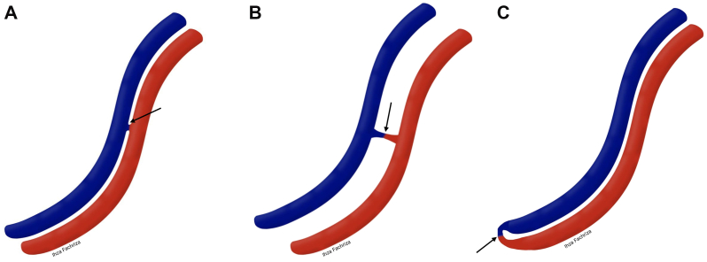
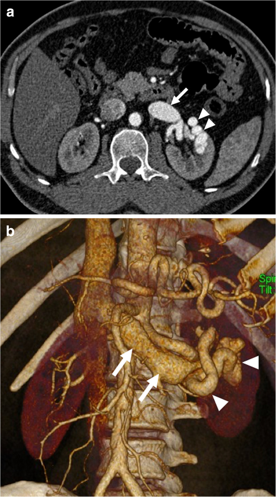
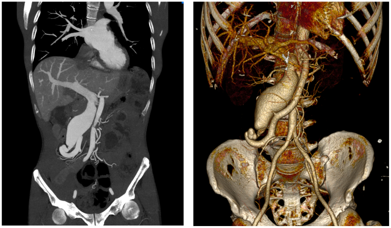
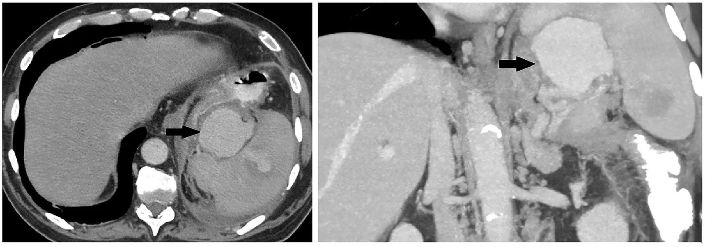

1836 — Rò động – tĩnh mạch tạng sau chấn thương và sau mổ: chẩn đoán, phân biệt với giả phình, chọn coil – plug – stent phủ / Visceral arteriovenous fistula
Tags: pattern:ro-dong-tinh-mach pattern:shunt-mach pattern:gia-phinh-mach pattern:hep-tinh-mach-cua pattern:giai-doan-som-tinh-mach vung:gan vung:lach vung:than vung:mach-cua vung:ruot-non vung:o-bung protocol:CTA-3-thi protocol:DSA protocol:balloon-assisted
Mức chắc chắn (certainty): tổng hợp y văn (literature synthesis) — ghép 1 tổng quan hình ảnh cấp cứu mạch tạng (Insights Imaging 2020, PMC7561664, CC BY 4.0), 1 tổng quan + 3 ca bệnh HHT thể gan (Front Med 2026, PMC13404187, CC BY 4.0), 1 ca + tổng quan 26 bệnh nhân rò động–tĩnh mạch gan bẩm sinh (J Med Case Rep 2025, PMC12763836, CC BY 4.0), 1 ca rò mạc treo tràng trên được bít bằng một plug (J Vasc Surg Cases Innov Tech 2026, PMC13092855, CC BY 4.0), 1 ca rò thân tạng–tĩnh mạch cửa sau đạn (Radiol Case Rep 2026, PMC13181249, CC BY-NC-ND 4.0), 1 ca rò thận lưu lượng cao có giãn tĩnh mạch chủ dưới (Radiol Case Rep 2026, PMC13196357, CC BY-NC-ND 4.0), 2 ca rò thận lưu lượng cao (J Vasc Surg Cases Innov Tech 2023, PMC9883246, CC BY-NC-ND 4.0), 1 ca bẫy máu tụ tổ chức hóa + rò giả giả phình lách (Radiol Case Rep 2026, PMC13586829, CC BY 4.0) và 2 ca rò lách sau chấn thương (Cureus 2024 PMC11302989 CC BY 4.0; Acta Med Litu 2025 PMC12875546 CC BY 4.0). Không có thử nghiệm ngẫu nhiên nào về ngưỡng can thiệp rò tạng → mục 4 là tổng hợp thực hành.
Câu chốt: rò động–tĩnh mạch (arteriovenous fistula, AVF) tạng là một lỗ thông trực tiếp giữa động mạch và tĩnh mạch, không qua giường mao mạch — nên trên CTA thì động mạch luôn có một dấu hiệu chốt: tĩnh mạch dẫn lưu đã ngấm thuốc SỚM, cùng lúc với động mạch, và giãn to (PMC7561664). Giả phình (pseudoaneurysm) không làm ngấm sớm tĩnh mạch — đây là điểm phân biệt quan trọng nhất, vì giả phình thì theo dõi/nút túi, còn rò thì phải bít lỗ thông và bảo tồn tĩnh mạch. Hệ quả lâm sàng chia hai nhánh: rò vào hệ cửa gây tăng áp cửa trước xoang (giãn tĩnh mạch thực quản–dạ dày), rò vào tĩnh mạch hệ thống gây suy tim lưu lượng cao khi lưu lượng shunt vượt 20% cung lượng tim (PMC13404187).
1. Tổng quan bệnh học – cơ chế hình ảnh
1.1 Vì sao AVF vừa "ồn ào" trên hình ảnh vừa dễ bị bỏ sót
- Vật lý của shunt: máu đi từ động mạch (áp lực cao) sang tĩnh mạch (áp lực thấp) không qua tiểu động mạch → sức cản ngoại vi giảm → lưu lượng qua lỗ thông tăng, chênh áp duy trì. Hệ quả: tĩnh mạch dẫn lưu giãn và "động mạch hóa", thành dày; động mạch nuôi giãn; và dòng "ăn cắp" (steal) khỏi mô phía sau lỗ thông.
- Vì sao thấy được trên thì động mạch: bình thường thuốc cản quang phải qua mao mạch nên tĩnh mạch chỉ ngấm ở thì tĩnh mạch (60–70 giây). Có lỗ thông, thuốc đi thẳng sang tĩnh mạch → ngấm ở thì động mạch (25–35 giây). Đây là cơ sở vật lý của dấu "early venous filling" — không phải "tĩnh mạch sáng hơn" mà là tĩnh mạch sáng SỚM (PMC7561664).
- Vì sao có hại: (1) quá tải thể tích → tăng tiền tải → suy tim lưu lượng cao; (2) nếu đổ vào hệ cửa → tăng áp lực tĩnh mạch cửa trước xoang → giãn tĩnh mạch, cổ trướng; (3) steal → thiếu máu mô đích (ví dụ hoại tử đường mật trong HHT gan) (PMC13404187).
- Ngưỡng suy tim lưu lượng cao: shunt trong gan > 20% cung lượng tim mới có ý nghĩa lâm sàng; chỉ số tim tăng 4,2–7,3 L/phút/m² (bình thường 2,5–4,0) (PMC13404187).
- Nguồn gốc: bẩm sinh (HHT, loạn sản mạch, AVF thận bẩm sinh) hoặc mắc phải — chấn thương, thủ thuật (sinh thiết thận/gan, dẫn lưu đường mật, phẫu thuật cắt tạng, TIPS), vỡ phình vào tĩnh mạch, viêm tụy, u. Đa số rò thận là mắc phải; tỉ lệ AVF thận nói chung khoảng 0,04% (PMC9883246).
- Vì sao dễ bỏ sót: rò lưu lượng nhỏ không triệu chứng trong nhiều năm; sau chấn thương có thể xuất hiện muộn (ngày → nhiều năm); và tổn thương có thể không thấy trên CT ban đầu — trong chấn thương lách, > 25% tổn thương mạch không hiện trên CT lần đầu (PMC11302989).
1.2 Ngưỡng định lượng nằm lòng
| Đại lượng | Số liệu | Nguồn |
|---|---|---|
| Tỉ lệ AVF thận (chung) | 0,04%; đa số mắc phải (thủ thuật, chấn thương, viêm, u) | PMC9883246 |
| Thời điểm ngấm tĩnh mạch bình thường | thì tĩnh mạch 60–70 giây (động mạch 25–35 giây) | PMC7561664; PMC11202795 |
| Ngưỡng shunt gây suy tim lưu lượng cao | > 20% cung lượng tim; chỉ số tim 4,2–7,3 L/phút/m² | PMC13404187 |
| HHT thể gan | 70% bệnh nhân HHT có tổn thương gan trên CT, chỉ 5–8% có triệu chứng; tuổi chẩn đoán trung bình 48 | PMC13404187 |
| Rò động–tĩnh mạch gan bẩm sinh (tổng quan 26 ca) | can thiệp nội mạch 22/26 (84,6%), chẹn beta 2 (7,7%), mổ/ghép gan 2 (7,7%); 2 trẻ tử vong sau nút mạch, 1 phải ghép gan | PMC12763836 |
| Rò mạc treo tràng trên (ca) | lỗ thông 10 × 12 mm, tiền sử mổ xoắn ruột 20 năm trước; bít 1 plug Amplatzer | PMC13092855 |
| Rò lách do chấn thương (ca) | lách độ IV, nhiều giả phình; CT ngày 5 mới thấy giả phình + AVF → nút mạch ngày 7 | PMC11302989 |
| Rò thận lưu lượng cao (ca) | tĩnh mạch thận giãn 4,0 × 4,0 cm; bít bằng coil + 0,2 mL NBCA 50% | PMC9883246 |
| Bẫy máu tụ + rò ở rốn lách (ca) | tổn thương 22 mm → 54 mm trong 13 ngày, ngấm cả thì tĩnh mạch cửa | PMC13586829 |
| Biến chứng của chính can thiệp | coil di trú vào nhĩ phải khi xả bóng; thiếu máu cực dưới thận 1/2 ca; huyết khối tĩnh mạch cửa sau nút mạch gan trong HHT | PMC13196357; PMC13404187 |
2. Mẫu hình + chẩn đoán phân biệt theo vị trí (gamut)
Mẫu hình chung: trên CTA thì động mạch, một tĩnh mạch lớn ngấm thuốc sớm nối với động mạch qua lỗ thông hẹp; tĩnh mạch giãn, thành dày; mô đích có thể giảm ngấm do steal; trên MIP/VRT thấy rõ "cầu nối" động–tĩnh mạch.
- Gan: (1) rò động–tĩnh mạch cửa (arterioportal) — tăng áp cửa trước xoang, có thể ho ra máu/đi cầu phân đen; (2) rò động–tĩnh mạch gan — suy tim lưu lượng cao; (3) HHT thể gan — tổn thương lan tỏa, nhiều shunt phối hợp; (4) sau sinh thiết/dẫn lưu đường mật/TIPS; (5) do HCC (shunt trong u).
- Lách: rò động mạch lách – tĩnh mạch lách → tăng áp cửa trái (giãn tĩnh mạch dạ dày đơn độc), lách to; nguyên nhân chấn thương, vỡ phình, sau mổ (kể cả mổ giảm béo), viêm tụy.
- Thận: rò động mạch – tĩnh mạch thận → đái máu, tăng huyết áp, suy tim lưu lượng cao, suy thận; sau sinh thiết thận là nguyên nhân hay gặp nhất.
- Mạc treo: rò mạc treo tràng trên – tĩnh mạch mạc treo, mạc treo tràng dưới – tĩnh mạch mạc treo dưới; sau mổ bụng, chấn thương; có thể giả khối đập theo mạch ở thượng vị (bắt chước phình động mạch chủ) (PMC13092855).
- Hình thái lỗ thông (theo phân loại SMAVF): type 1A — thông bên–bên không có đoạn rò; type 1B — bên–bên có đoạn rò xác định; type 2 — tận–bên/tận–tận (đầu động mạch đổ thẳng vào tĩnh mạch) (PMC13092855). Type 2 khó bảo tồn nhánh hơn.

Sơ đồ: (A) type 1A — thông bên–bên không có đoạn rò; (B) type 1B — bên–bên có đoạn rò; (C) type 2 — tận–bên. Đỏ = động mạch, xanh = tĩnh mạch, mũi tên = lỗ thông. Nguồn: J Vasc Surg Cases Innov Tech 2026, PMC13092855, CC BY 4.0.3. Bảng so sánh phân biệt (ma trận đối chiếu)
| Thực thể (entity) | Hình ảnh điển hình | Chốt vào (rule-in) | Chốt loại (rule-out) | Gợi ý xác nhận |
|---|---|---|---|---|
| Rò động – tĩnh mạch (AVF) | Lỗ thông động–tĩnh mạch + tĩnh mạch dẫn lưu ngấm SỚM ở thì động mạch, giãn to | Ngấm sớm tĩnh mạch cùng thì động mạch + tĩnh mạch giãn | Tĩnh mạch chỉ ngấm ở thì tĩnh mạch → không phải rò | CTA 3 thì + MIP/VRT; DSA xác nhận và đo lưu lượng |
| Giả phình động mạch (pseudoaneurysm) | Túi ngấm thuốc giữ nguyên hình, không có tĩnh mạch ngấm sớm; có thể có "rửa song hành" | Túi ngấm ở thì động mạch, không thấy tĩnh mạch sớm | Tĩnh mạch dẫn lưu ngấm sớm → là rò, không phải giả phình | CTA; DSA; theo dõi kích thước |
| Shunt lách – thận bẩm sinh (splenorenal shunt) | Giãn tĩnh mạch lách–thận, không có lỗ thông động mạch, không có dòng động mạch vào tĩnh mạch | Không thấy dòng động mạch đổ trực tiếp vào tĩnh mạch | Thấy dòng động mạch–tĩnh mạch trực tiếp → rò | CTA thì động mạch; DSA |
| Máu tụ tổ chức hóa có rò (bẫy) | Khối ở rốn lách tăng nhanh (22 → 54 mm), ngấm cả thì tĩnh mạch cửa; DSA có hình giống giả phình | Ngấm kéo dài sang thì tĩnh mạch + tăng kích thước nhanh + bối cảnh viêm tụy hoại tử | Ngấm chỉ thì động mạch, hình túi cố định → giả phình thật | CTA nhiều thì; DSA; mô bệnh sau mổ là chốt |
| Dị dạng động – tĩnh mạch (AVM) có nidus | Nidus nhiều cuộn mạch, nhiều động mạch nuôi và nhiều tĩnh mạch dẫn | Nidus + nhiều cuống mạch | Một lỗ thông đơn độc → AVF | CTA/MRA; DSA; phân độ Spetzler–Martin nếu ở não |

(a) Thì động mạch: tĩnh mạch thận trái giãn ngấm thuốc sớm (mũi tên) + cụm mạch giãn (đầu mũi tên). (b) VRT: động mạch–tĩnh mạch thông trực tiếp, tĩnh mạch giãn ngoằn ngoèo. Bệnh nhân 53 tuổi, đái máu 2 tháng sau sinh thiết thận qua da. Nguồn: Insights Imaging 2020, PMC7561664, CC BY 4.0.Dấu hiệu chốt trên từng thì
- Thì không cản quang: máu tụ, vôi hóa, dịch quanh tạng; không chẩn đoán được rò.
- Thì động mạch: dấu chốt — tĩnh mạch ngấm sớm + giãn; đo đường kính lỗ thông, đường kính tĩnh mạch dẫn lưu, tìm động mạch nuôi.
- Thì tĩnh mạch cửa: xác nhận hướng dẫn lưu (hệ cửa hay hệ thống), tìm huyết khối trong tĩnh mạch, đánh giá giãn tĩnh mạch thực quản–dạ dày.
- Thì muộn: đánh giá ngấm bù/steal của nhu mô và giả phình kèm theo.
4. Protocol chụp + phân loại, chọn dụng cụ
4.1 CTA tạng 3 thì — protocol tối thiểu
- Không cản quang → động mạch (bolus-tracking, 4–5 mL/s, ngưỡng 150 HU, ~25–35 giây) → tĩnh mạch cửa (60–70 giây) → muộn 3 phút khi cần.
- Lát cắt 1–2 mm, tái tạo MPR + MIP + VRT theo trục mạch; VRT rất hữu ích để thuyết phục phẫu thuật viên về vị trí và kích thước lỗ thông.
- Đo và ghi vào phiếu: đường kính lỗ thông (mm), đường kính tĩnh mạch dẫn lưu (mm), động mạch nuôi, có/không giả phình kèm, huyết khối tĩnh mạch, giãn tĩnh mạch.
- DSA là tiêu chuẩn vàng để xác nhận và đo lưu lượng; luôn chụp chọn lọc động mạch nuôi + chụp thì muộn để thấy đường dẫn lưu.
4.2 Chọn dụng cụ bít — theo lưu lượng và hình thái
| Tình huống | Lựa chọn | Lý do |
|---|---|---|
| Lỗ thông nhỏ, một cuống, mạch thẳng | Coil (đơn thuần hoặc coil + keo) | Rẻ, dễ kiểm soát; coil đơn thuần trong dòng chảy thấp |
| Lỗ thông lớn, lưu lượng cao | Vascular plug (Amplatzer) | Bít nhanh, ít coil, ít di trú; quá cỡ 30–50% theo IFU (bài 1833) |
| Lưu lượng rất cao, nguy cơ coil trôi | Bóng chặn dòng + coil/keo (balloon-assisted) | Hạ dòng trong lúc thả coil; phải xả bóng có kiểm soát vì coil có thể trôi khi xả (ca thực tế: coil vào nhĩ phải) |
| Cần giữ động mạch nuôi (thận, gan) | Stent phủ (covered stent) | Bít lỗ thông, bảo tồn nhánh lành |
| Tổn thương lan tỏa/nhiều shunt (HHT) | Cân nhắc không can thiệp hoặc nút chọn lọc từng cuống | Nút lan tỏa gây hoại tử đường mật, huyết khối tĩnh mạch cửa |
- Nguyên tắc: bít lỗ thông, không bít tĩnh mạch dẫn lưu (trừ khi không còn cách); giữ động mạch nuôi khi có thể; kiểm tra DSA sau bít phải hết ngấm sớm tĩnh mạch.
- Theo dõi: CTA 1 – 3 – 6 tháng, sau đó mỗi năm; đích là hết shunt, giảm đường kính tĩnh mạch dẫn lưu, không hẹp/tắc động mạch nuôi.
flowchart TD
A[Phát hiện AVF tạng trên CTA] --> B{Có triệu chứng hoặc shunt lớn?}
B -->|Không| C[Theo dõi CTA 6-12 tháng - ghi kích thước]
B -->|Có| D{Có giả phình hoặc chảy máu kèm theo?}
D -->|Có| E[Xử trí cấp cứu - bít lỗ thông hoặc mổ]
D -->|Không| F{Lưu lượng cao?}
F -->|Không| G[Coil hoặc coil + keo]
F -->|Có| H[Plug quá cỡ 30-50 phần trăm]
H --> I{Nguy cơ coil trôi cao?}
I -->|Có| J[Bóng chặn dòng + coil - xả bóng có kiểm soát]
I -->|Không| K[Thả plug - kiểm tra DSA]
G --> L[CTA 1-3-6 tháng]
J --> L
K --> L
4.3 Phân độ nặng để quyết định can thiệp
| Mức | Đặc điểm | Xử trí |
|---|---|---|
| 1 – Không triệu chứng, shunt nhỏ | Tình cờ, tĩnh mạch dẫn lưu không giãn nhiều | Theo dõi CTA 6–12 tháng; can thiệp khi giãn tiến triển |
| 2 – Có triệu chứng, shunt vừa | Đau, đái máu, tăng huyết áp, giãn tĩnh mạch cửa nhẹ | Bít nội mạch chọn lọc |
| 3 – Shunt lớn / suy tim lưu lượng cao / tăng áp cửa có biến chứng | Chỉ số tim cao, giãn tĩnh mạch thực quản, cổ trướng | Bít sớm, cân nhắc plug/balloon-assisted/stent phủ |
| 4 – Tổn thương lan tỏa, hoại tử mô đích | HHT lan tỏa, hoại tử đường mật, huyết khối cửa | Hội chẩn đa chuyên khoa, cân nhắc ghép gan thay vì nút |
5. Biến thể bình thường và cạm bẫy
- Giả phình vs rò: chỉ một khác biệt quyết định — tĩnh mạch dẫn lưu có ngấm ở thì động mạch hay không. Đừng đoán theo kích thước hay "hình tròn".
- Bẫy máu tụ tổ chức hóa + rò: tổn thương rốn lách tăng 22 → 54 mm trong 13 ngày, ngấm cả thì tĩnh mạch cửa; DSA trông như giả phình; nút mạch gần không hiệu quả (vẫn còn dòng động mạch) → phải cắt lách và mô bệnh mới chốt (PMC13586829). Bài học: ngấm kéo dài sang thì tĩnh mạch + tăng nhanh là cờ đỏ của rò, không phải giả phình.
- Shunt lách–thận bẩm sinh không phải rò: không có dòng động mạch vào tĩnh mạch; đừng nút.
- Rò "im lặng" sau chấn thương: có thể xuất hiện ngày 5 hoặc nhiều năm sau; CT lần đầu có thể âm (> 25% tổn thương mạch không thấy) → chụp lại khi có triệu chứng mới (PMC11302989).
- Rò thận sau sinh thiết: phần lớn nhỏ và tự kín; chỉ can thiệp khi đái máu kéo dài, tăng huyết áp, suy tim, hoặc giãn tĩnh mạch chủ — can thiệp sớm quá có thể mất nhu mô thận (PMC13196357).
- Coil trôi: khi dùng bóng chặn dòng, lúc xả bóng dòng chảy trở lại có thể kéo coil vào nhĩ phải — luôn có vòng lấy coil và kiểm tra huỳnh quang trước khi xả (PMC13196357).
- Nút mạch gan lan tỏa trong HHT có thể gây huyết khối tĩnh mạch cửa và hoại tử đường mật (ca thứ 3 trong PMC13404187) → không nút "cho hết shunt", chỉ nút khi có chỉ định rõ.
6. Tự lượng giá — Blind Quiz
Ca 1 — Nam 53 tuổi, đái máu 2 tháng sau sinh thiết thận qua da. CTA thì động mạch.
- Hỏi: dấu hiệu chốt? Ba chẩn đoán phân biệt? Có phải can thiệp ngay không?
Bấm để hiện đáp án (findings + chẩn đoán)
- Dấu hiệu: tĩnh mạch thận trái giãn, ngấm thuốc SỚM ở thì động mạch (mũi tên); cụm mạch giãn (đầu mũi tên); VRT thấy rõ cầu nối động–tĩnh mạch.
- Chẩn đoán: rò động – tĩnh mạch thận sau sinh thiết (acquired AVF).
- Phân biệt: giả phình sau sinh thiết (không ngấm sớm tĩnh mạch); rò động–tĩnh mạch bẩm sinh (không tiền sử thủ thuật, thường một cuống lớn); dị dạng mạch (có nidus).
- Xử trí: không phải mọi ca đều can thiệp — theo dõi nếu nhỏ, không triệu chứng; can thiệp khi đái máu kéo dài, tăng huyết áp, suy tim, giãn tĩnh mạch chủ; bít chọn lọc bằng coil/keo, giữ nhánh lành.
- Nguồn ảnh: Insights Imaging 2020, PMC7561664, CC BY 4.0.
Ca 2 — Nam 49 tuổi, khối đập thượng vị, tiền sử mổ xoắn ruột 20 năm trước.

- Hỏi: vì sao tĩnh mạch cửa đã ngấm thuốc? Chọn dụng cụ gì?
Bấm để hiện đáp án (findings + chẩn đoán)
- Dấu hiệu: tĩnh mạch mạc treo tràng trên và tĩnh mạch cửa giãn rất lớn, ngấm thuốc ở thì động mạch; VRT thấy động mạch mạc treo nối trực tiếp với tĩnh mạch giãn.
- Cơ chế: lỗ thông 10 × 12 mm → thuốc đi thẳng vào hệ cửa → ngấm sớm; lưu lượng lớn tạo khối đập giả phình động mạch chủ.
- Chẩn đoán: rò động – tĩnh mạch mạc treo tràng trên (type 1B/2 tùy hình thái) sau mổ cũ.
- Xử trí: một plug Amplatzer đủ bít; kiểm tra DSA sau thả phải hết shunt và giữ nhánh ruột.
- Nguồn ảnh: J Vasc Surg Cases Innov Tech 2026, PMC13092855, CC BY 4.0.
Ca 3 — Bệnh nhân viêm tụy hoại tử, tổn thương rốn lách 22 mm rồi 54 mm sau 13 ngày.

- Hỏi: vì sao không gọi là giả phình? Nút mạch gần có đủ không?
Bấm để hiện đáp án (findings + chẩn đoán)
- Dấu hiệu: khối rốn lách tăng 22 → 54 mm trong 13 ngày, ngấm mạnh ở thì tĩnh mạch cửa (mũi tên), kéo dài quá thì động mạch; DSA có hình giống giả phình + thoát mạch.
- Chẩn đoán thật (mô bệnh): máu tụ tổ chức hóa kèm rò động – tĩnh mạch, không phải giả phình động mạch lách.
- Vì sao nút gần thất bại: bít động mạch lách gần không bít được lỗ thông và dòng bàng hệ; CT sau nút vẫn còn dòng động mạch + rò → phải cắt lách.
- Bài học: ngấm sang thì tĩnh mạch cửa + tăng kích thước nhanh → nghĩ rò, đừng chỉ nhìn "túi tròn ngấm thuốc".
- Nguồn ảnh: Radiol Case Rep 2026, PMC13586829, CC BY 4.0.
Bài liên quan chéo
- 1835 – Thiếu máu ruột sau nút mạch mạc treo
- 1833 – Vascular plug trong nút mạch tạng: chọn cỡ, kỹ thuật
- 1819 – Chảy máu muộn & giả phình mạch tạng
- 1831 – Di trú & xuyên thành của coil sau can thiệp mạch tạng
- 187 – Giãn tĩnh mạch lạc chỗ: TIPS, BATO/ATO hay PTO
- 920 – Nút mạch trong chảy máu tiêu hóa
Không dùng để chẩn đoán độc lập khi chưa có người hướng dẫn.